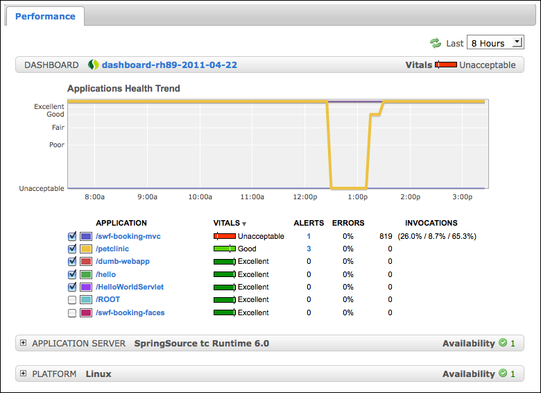
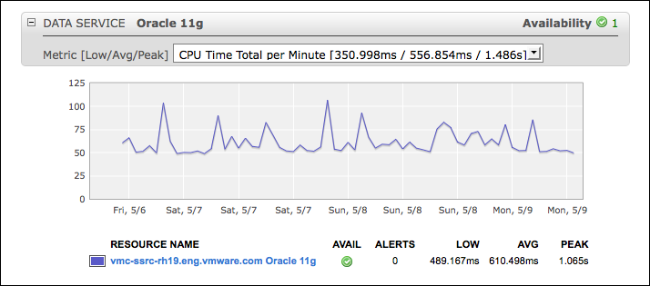
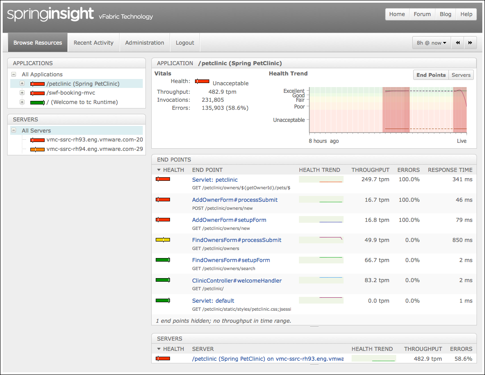

Available only in vFabric Hyperic
Spring Insight Applications
This page describes the Spring Insight Applications page, available in vFabric Hyperic if you have Insight Operations under management.
Understanding Application Metrics
The Spring Insight Applications page presents multiple metrics that indicate how well an application is running, for instance, the percentage of application requests had an unacceptable response time, how many requests return errors, and so on.
These metrics, described in the sections below, appear in several places in the Spring Insight Applications user interface: on the Health tab, which presents metrics for all applications reporting to Hyperic monitored Dashboards applications, and also on the Performance tab for an Insight Dashboard or an Insight Application.
Application Health
The Application Health metric for an application is the health value that Insight calculates for the application. The Insight health metric is based on the percentage of Insight traces that complete without error. The values, indicators, and thresholds for the Application Health metric are defined below.
| Value | Indicator | Percentage of Successful Insight Traces |
|---|---|---|
| Excellent |  |
94% or more |
| Good |  |
85% - 93% |
| Fair |  |
70% - 84% |
| Poor |  |
50% - 83% |
| Unacceptable |  |
0% - 49% |
Application Vitals
The Vitals metric for an application is calculated by Hyperic. It is based on the Application Health metric (described above), and also takes into account the Hyperic metrics and events for the application and for resources that the application depends upon, including:
- Number of unfixed alerts for the application in Hyperic.
- Availability of the managed resources that the application depends upon: application servers, database servers (if applicable), and platforms.
- Number of unfixed alerts for the resources that the application depends upon: application servers, database servers (if applicable), and platforms.
If an application has no unfixed alerts in Hyperic and the resources it depends upon are available and have no unfixed alerts, the application's value of the applications Vitals metric is equal to the value of its Application Health metric.
Unfixed Alert Count
The number of unfixed alerts during the timeframe.
Error Rate
The percentage of Insight traces that resulted in an HTTP error status code (500 to 600).
Response Time Levels
The "Invocations" metric tells you what percentage of traces had response times in each of three response time levels. The response time thresholds for each level are configurable in Spring Insight, and by default are:
- Satisfied — Response time 200 ms or less.
- Tolerated — Response time over 200 ms but less than 800 ms.
- Frustrated — Response time 800 ms or over.
For example
indicates that over the selected interval:
- 19.2% of the traces had response time 200 ms or less.
- 7.5% had response time over 200 ms but less than 800 ms.
- 73.4% had response time 800 ms or over.
Contents of the Spring Insight Applications Page
The sections below describe the contents of each section of the Spring Insight Applications page.
Dashboards Tab
The Dashboards pane on the left side of the Spring Insight Applications page is a tree control whose nodes are Insight Dashboards and Insight Applications.
The color of the bar to the left of a Dashboard node indicates the worst Vitals metric among the applications reporting to the Dashboard.

You use the Dashboards pane to browse a hierarchy of performance data. Depending on your need and interest, you view filter your view to include health information for:
- All applications reporting to all Hyperic-managed Insight Dashboards
- This is the view that appears when neither a dashboard or application is selected in the tree control. To return to this view, click the Dashboards link above the tree control. For a description of the view, see Health Tab for all Applications.
- Just the applications reporting to a particular Insight Dashboards
- To display this view, click the dashboard of interest in the tree control. For a description of the view, see Performance Tab for a Dashboard.
- Just one particular application
- To display this view, select the application of interest in the tree control. For a description of the view, see Performance Tab for an Application.
Health Tab for all Applications
The Health tab summarizes the health of all of the applications reporting to Hyperic-managed Insight Dashboards. This tab is present when you first open the Spring Insight Applications page.
After navigating to a dashboard or an application, you can redisplay the Health tab by clicking the "Dashboards" link at the top of the left pane.

The Health tab contains the following data and metrics:
- Applications Health Trend chart — By default, this chart plots the health of the five applications that currently have the poorest vitals. You can add and remove applications to the chart by checking and unchecking the box next to it. For a definition of the metric, see Application Health.
- Worst Vitals — The Vitals indicator in the "All Applications" bar reflects the worst value reported among all applications reporting to all Dashboards. For a definition of the Vitals metric, see Application Vitals.
- Application Metrics — Below the Applications Health Trend chart is a list of all applications under management, ordered by the applications' Vitals metric, starting with the worst. The following data and metrics are displayed for each application:
- Application — The name of the application is a link; if you click it, the Performance tab for the dashboard appears. See Performance Tab for an Application.
- Vitals
- Alerts — For a definition of the metric, see Unfixed Alert Count.
- Errors — For a definition of the metric, see Error Rate.
- Invocations (F/T/S) — For a definition of the metric, see Response Time Levels.
Performance Tab for a Dashboard
To display the Performance tab for an Insight Dashboard, click the dashboard's name in the Dashboards tab.

Note: In the list of applications reporting to the dashboard:
- The list is ordered by application health, from worst to best.
- You can mouse over the application name to highlight the line for it in the Application Health Trend chart.
- You can click the application name to display the Performance tab for it. See Performance Tab for an Application.
The Performance tab for a Dashboard contains:
- Applications Health Trend chart — By default, this chart plots the health of the five applications (reporting to the Dashboard) that currently have the poorest vitals. You can add and remove applications to the chart by checking and unchecking the box next to it. For a definition of the metric, see Application Health.
- Dashboard Vitals — The Vitals indicator in the "Dashboard" bar is a composite health indicator that takes into account:
- The Vitals for the applications reporting to the currently selected Insight Dashboard.
- Availability of the managed resources that the Insight Dashboard depends upon: application server (tc Server) and platform.
- Number of unfixed alerts for the resources that the Insight Dashboard depends upon: application server (tc Server) and platform.
- Application Metrics — Below the Applications Health Trend chart is a list of the applications reporting to the Dashboard. The following metrics are displayed for each application:
- Vitals — For a definition, see Application Vitals.
- Alerts — For a definition, see Unfixed Alert Count.
- Errors — For a definition, see Error Rate.
- Invocations (F/T/S) — For a definition, see Response Time Levels.
- Application Server Performance — To view health data for the application server that the Insight Dashboard runs on, click the control in the Application Server bar. See Application Server Performance.
- Platform Performance — To view health data for platform on which the Insight Dashboard runs, click the control in the Platforms bar. See Platform Performance.
Application Server Performance
The "Application Server" section charts a selected app server metric for all, or selected application servers where the applications in the dashbaord run.

The Metric Low/Avg/Peak pulldown lists all of the available metrics for the application server and shows the low, average, and peak values for the metric over the current time range. Choose a metric from the list to graph it.
Below the chart, the following information is listed for each application server:
- name — The name of the resource in Hyperic.
- AVAIL — Current availability of the resource
- ALERTS — Current number of unfixed alerts
- LOW — Low value during current display range.
- AVG — Average value during current display range.
- PEAK — High value during current display range.
Platform Performance
The "Platform" section charts a selected platform metric for all, or selected platforms where the applications in the dashbaord run.

The Metric Low/Avg/Peak pulldown lists all of the available platform metrics and shows the low, average, and peak values for the metric over the current time range. Choose a metric from the list to graph it.
Below the chart, the following information is listed for each platform:
- name — The name of the resource in Hyperic.
- AVAIL — Current availability of the resource
- ALERTS — Current number of unfixed alerts
- LOW — Low value during current display range.
- AVG — Average value during current display range.
- PEAK — High value during current display range.
Performance Tab for an Application
To display the Performance tab for an Insight Application, click the applications's name in the Dashboards tab.

The Performance tab has four sections:
- Applications
- The application name is a link — if you click it, Insight Operations will open in a new window, and display more detailed resource health and performance metrics for the current display range.
- The Vitals health bar to the right of the application name indicates the current Vitals for the application. For a definition of the Vitals metric, see Application Vitals.
- The Health Trend chart plots the application's "Health" and "Error Rate" metrics for the display range. For a definition of the health metric metric, see Application Health.
- The Invocations chart plots the distribution of request response times across the three response time levels defined in Response Time Levels.
- Application Server
- This section is expanded if one or more application servers to which the app is deployed is unhealthy. Otherwise, the section is collapsed.
- For information about the metrics presented, see Application Server Performance.
- Data Service
- This section is present if the application access a Hyperic managed database server. see Data Service Performance.
- This section is expanded if the database that the app uses is unhealthy application. Otherwise, the section is collapsed.
- For information about the metrics presented, see Data Service Performance.
- Platform
- ** This section is expanded if one or more platforms where the app runs is unhealthy. Otherwise, the section is collapsed.
- For information about the metrics presented, see Platform Performance.
Data Service Performance
The "Data Service" section is present if the currently selected application accesses a database managed by Hyperic.

The Metric Low/Avg/Peak pulldown lists all of the available platform metrics and shows the low, average, and peak values for the metric over the current time range. Choose a metric from the list to graph it.
Below the chart, the following information is listed for each platform:
- name — The name of the resource in Hyperic.
- AVAIL — Current availability of the resource
- ALERTS — Current number of unfixed alerts
- LOW — Low value during current display range.
- AVG — Average value during current display range.
- PEAK — High value during current display range.
Jump to Insight Operations
You can jump from the Spring Insight Applications page into the Insight application to investigate problems. Click the application name link on the application's Performance tab. (See the screenshot in Performance Tab for an Application.) Insight will open in a new window, with the application selected in the Browse Resources tab, where you can view more detailed application health data for display range currently selected in the Hyperic user interface.
